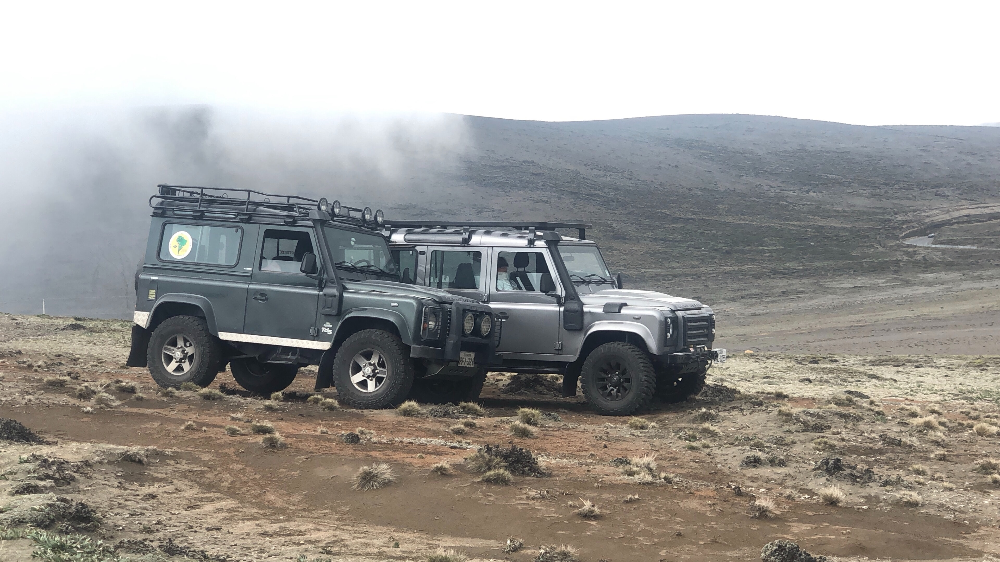

Tourist Packs
Cumbre Chimborazo
Ven a disfrutar del volcán Chimborazo el más cercano al sol. La altura de 6268 m.s.n.m. Los inmensos glaciales y los camélidos como vicuñas, alpacas y llamas. Flora y Fauna.

Trecking Volcán altar
Disfruta de una aventura única por uno de los lugares más hermosos del Ecuador, la caminata al Nevado El Altar o Kapak Urku en Kichwa te lleva a descubrir la magia del páramo andino observando el contraste entre la flora y fauna de la zona. Sorpréndete con el inmenso Valle de Collanes y la fascinante laguna amarilla.
Bike Tour
En este recorrido podrás disfrutar de los bellos paisajes de la zona andina y sobre todo descubrir la famosa ruta denominada "Avenida de los Volcanes", la zona montañosa andina del Ecuador. Combina actividades caminatas, bicicleta y otros deportes de aventura. Es un recorrido que va desde la ciudad de Quito hasta Cuenca , atravesando pequeñas zonas pobladas, sitios arqueológicas y el famoso tren cuyo trayecto es en zig-zag, conocido como Nariz del Diablo.